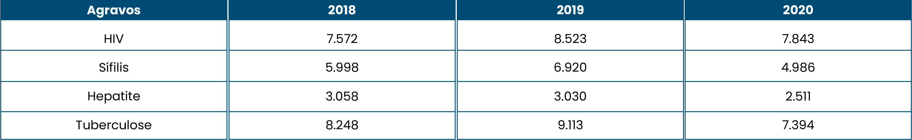

Os dados do gráfico demonstram a necessidade de implementar ações para a prevenção de ISTs nas unidades prisionais. Uma das maneiras de se realizar um controle das ISTs é a testagem periódica de pessoas privadas de liberdade (PPL).
Fonte: Sisdepen, 2020.